遊びで植物を育てよう
2025/08/31
ポポーの収穫が始まりました。
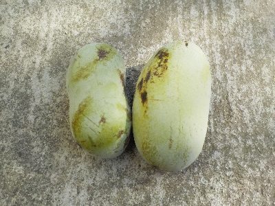
今年は生で何個食べるかなー。
房が沢山付いてるところは間引いたので、そんなに大量には出来ない予定です。
【ポポーTOP】
【果物TOP】
【園芸TOP】
2025/07/19
ポポーの実生を抜いています。
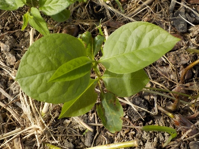
ポポーの木のまわりに小さいポポーが誕生しています。
木の下で邪魔になるので抜き捨ててます。
近頃暑いので、去年収穫した冷凍保存のポポーを食べています。今年のポポー収穫までに食べきれるかな？
【ポポーTOP】
【果物TOP】
【園芸TOP】
2024/12/15
大嫌いだったポポーの剪定をしました。
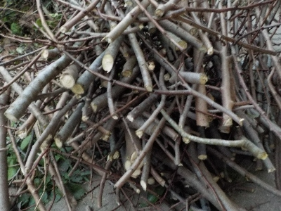
ちょっと前まで大嫌いだったポポーですが、しばらく食べていなかったので最近普通に食べれるようになりました。
しかし収穫シーズンになったらまた嫌いになると思うので、バサバサ切って小さくしました。
【ポポーTOP】
【果物TOP】
【園芸TOP】
2024/10/06
ポポーの収穫はしばらく前からやめました。
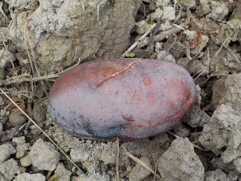
ポポーを食べすぎたせいか、只今ポポーは嫌いな果物ナンバー1です。
もう収穫もしたくないので、落ちた実を放置しています。
冬になったらバッサリ剪定してコンパクトにしよう。
【ポポーTOP】
【果物TOP】
【園芸TOP】
2024/09/12
ポポー大量収穫です。
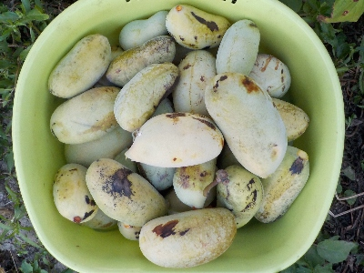
大量にあって食べきれないので、ジャムにして冷凍します。
あー手間暇かかるなー。凄く美味しいならいいけど、そこまで美味しくないんだよなー。
毎年沢山食べているので、ありがたさがなくなってしまっている。
【ポポーTOP】
【果物TOP】
【園芸TOP】
2024/09/11
今回のポポージャムは黄色く出来ました。
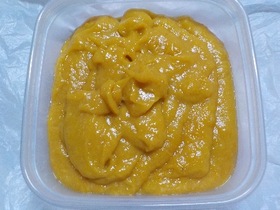
前回ポポージャムを作ったときは茶色かったですが、今回は黄色くなりました。
前回は冷凍を解凍したときに水分が分離して、煮詰め易かったかもしれない。
今回はフレッシュなポポーをジャムにしました。
【ポポーTOP】
【果物TOP】
【園芸TOP】
2024/09/01
本日のポポーは5個です。
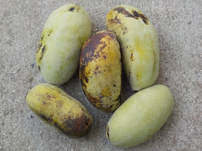
前回から4日ぶりにポポーの実が落ちていました。
数が少ないので生食かな。
【ポポーTOP】
【果物TOP】
【園芸TOP】
2024/08/28
もうポポーが落ちていました。
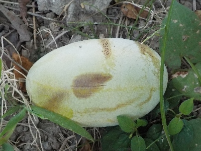
そろそろポポーの収穫時期が来るなと思い木の下を見たら、落ちていました。
毎日は無理だけど、2日に1回は収穫したいな。
今日は２つ収穫しました。
【ポポーTOP】
【果物TOP】
【園芸TOP】
2024/08/18
ポポージャムを作りました。
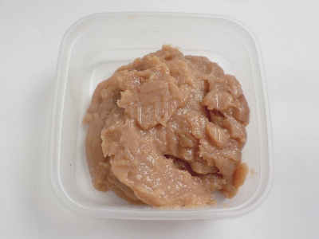
去年作った冷凍ポポーが減らないので、ジャムにしました。
ポポーのシャーベットはヨーグルトに入れて食べると美味しいんですが、ヨーグルトで薄まるので１回の消費量が少なかったです。
ジャムは煮詰めたら味噌みたいな見た目になりました。煮詰めで濃厚になって、あんこみたい。これに寒天を少し加えたらポポー羊羹が出来そうです。
このままでも水ようかんみたいなので、このまま食べてもいいな。
【ポポーTOP】
【果物TOP】
【園芸TOP】
2024/04/07
ポポーの花が咲いています。
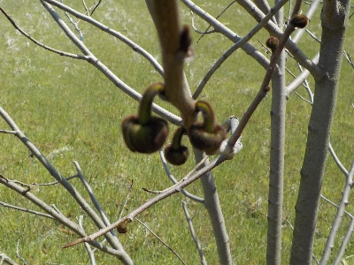
ポポーは受粉とか袋掛けや消毒をしなくていいから楽でいいですね。
でも収穫の時期は毎日のように熟れ具合を見るので、トータルの手間は多いかな。
【ポポーTOP】
【果物TOP】
【園芸TOP】
2023/10/18
今年最後のポポーシャーベット作りです。
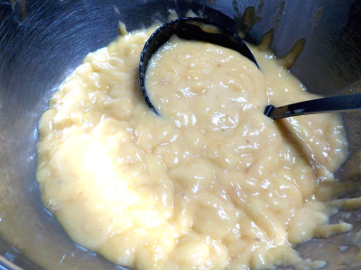
まだ木に少し残っていますが、沢山収穫したのでもういいかな。
今年はポポーを冷凍してシャーベットにして食べてます。冷凍庫にポポーのストックが沢山出来ました。
繊維質が多いので、チョットづつ食べようと思ってます。
【ポポーTOP】
【果物TOP】
【園芸TOP】
2023/10/08
ポポー大量収穫です。
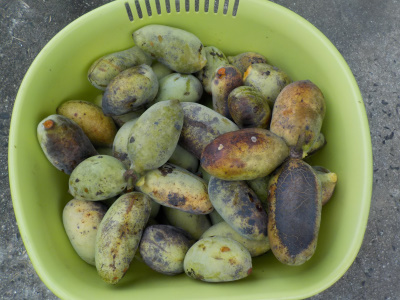
ポポーが沢山落ちてました。
今が1番収穫が多いかな。食べれないので皮とタネを取って、ジップロックに入れて冷凍してます。
【ポポーTOP】
【果物TOP】
【園芸TOP】
2023/10/01
ポポーのためにリンゴを買いました。
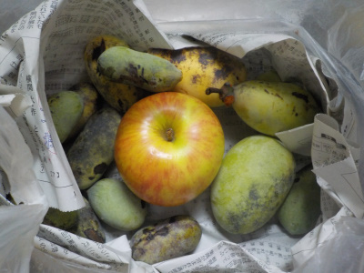
青いポポーがなかなか熟れないので、リンゴを買って同じ袋に入れました。
リンゴを入れたら、ちょっとずつ熟れてる感じがします。効果があったんでしょう。
袋を閉じると湿気がこもるので、カビが発生しました。ちょっと開けた方がよさそうです。
【ポポーTOP】
【果物TOP】
【園芸TOP】
2023/09/24
風が強かったのでポポー大量収獲です。
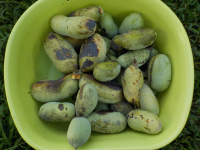
風に揺らされて、ポポーが沢山落ちました。
青くて硬いものが多くありますが、これらはちゃんと追熟するかな？
【ポポーTOP】
【果物TOP】
【園芸TOP】
2023/09/12
ポポーが木から落ちる前に収獲したいです。
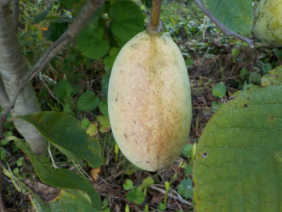
木から落ちると虫が付くので、落ちる前に収獲したいと思いました。
この実は色が黄色くて熟れていそうですが、まだ実が硬く甘い匂いがしません。
まだ収獲時期ではなさそうです。
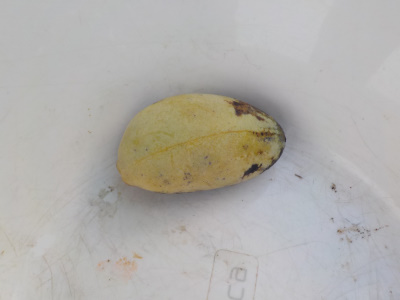
今日木から落ちる前に収獲した実はこれ一つだけでした。
【ポポーTOP】
【果物TOP】
【園芸TOP】
2023/09/07
ポポーが木の下に落ちていました。
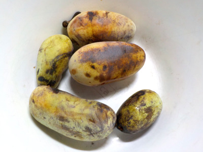
そろそろかなーと思って見てみたらポポーが落ちていました。
いつ落ちたんでしょうね？一部虫に食べられていたので、食べるのがちょっと怖かったです。
食べてみた感じは、いつも通りの味で美味しかったです。良かった。
【ポポーTOP】
【果物TOP】
【園芸TOP】
2023/07/30
ポポーの挿し木は失敗しました。
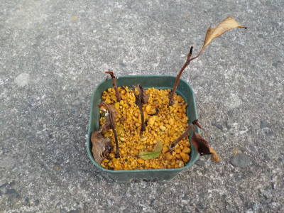
全部枯れました。挿し木した部位が先端だったのが悪かったのかな？
【ポポーTOP】
【果物TOP】
【園芸TOP】
2023/06/25
ポポーは挿し木が出来るそうです。
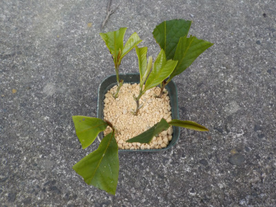
ネットの情報に、ポポーは挿し木が出来るとありました。
本当かな？ポポーの木は軽くて柔らかいので、水分がすぐになくなって枯れちゃう気がするんですけど。
試しにやってみます。
【ポポーTOP】
【果物TOP】
【園芸TOP】
2023/06/24
ポポーをバサバサ切りました。
2023/04/09
ポポーの花が沢山咲いています。
2023/02/12
ポポーの枝に花っぽい小さいのがありました。
2022/10/02
ポポーの大量収穫は今回で終わりです。
2022/09/18
10日前の青いポポーを食べました。
2022/09/13
今日の収獲は12個でした。
2022/09/08
台風の影響でポポーの実が落ちました。
2022/07/10
ポポーの実が大きくなってます。
2022/05/29
ポポーの受粉をサボったら、実が少ししか出来ていませんでした。
2022/04/10
このポポーは今年初めて花が咲きました。
【ポポーTOP】
【果物TOP】
【園芸TOP】
2021/10/03
まだ熟れないポポー。
2021/09/26
ポポーが木に付いたまま腐敗。
2021/09/19
ポポーの実を沢山収穫しました。
2021/08/21
ポポーの実が落ちていました。
2021/07/03
ポポーの実がぎっしりです。
2021/04/10
ポポーの花が咲きました。
2020/09/29
今年採れたポポーで一番大きいものは8.5センチでした。
2020/09/13
ポポーが完熟しました。
2020/07/12
ポポーの実が只今5センチくらいです。
2020/05/17
ポポーに実が出来ていました。
【ポポーTOP】
【果物TOP】
【園芸TOP】
2020/04/05
ポポーに花がつきました。
2018/01/14
ポポーの植え替えに挑戦。
2015/09/27
鉢植えのポポーよりも地植えのポポーが育っていました。
2015/04/25
枯れ木ポポーから芽が出ました。
2014/11/16
ポポーの葉っぱが全部落ちました。
2014/11/08
ポポーは紅葉しているのかな？。
2014/08/31
ポポーが大きくなったので植え替えしました。
2014/07/28
ポポーの葉っぱがやっと出た。
2014/07/05
ポポーの茎が出てる！
2014/04/20
ポポーの種まき。
【ポポーTOP】
【果物TOP】
【園芸TOP】
ポポーはクセがあるので沢山は食べれないな。
【おいしいものを食べよう。】【しっかり寝よう。】
【ソロ活をしよう!】【季節感のあることをしよう。】【動画視聴はほどほどに。】【当サイトの全てのコンテンツは無断転載禁止です。】